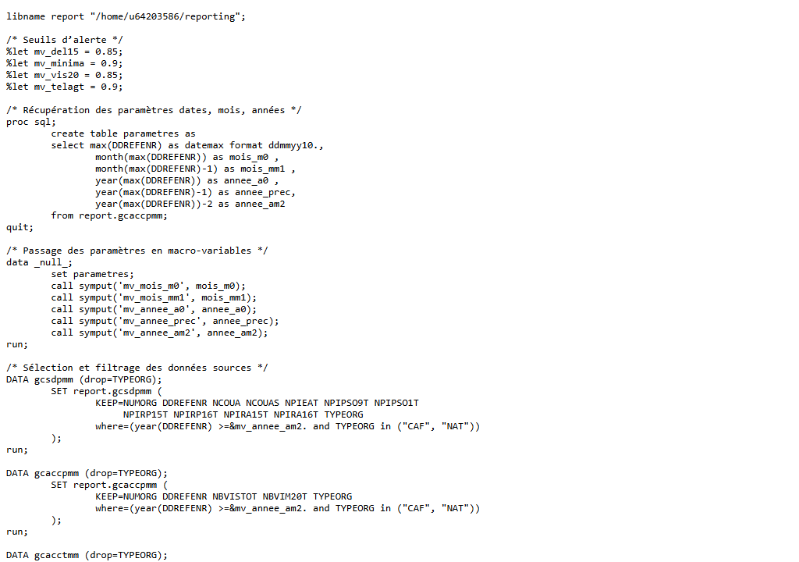
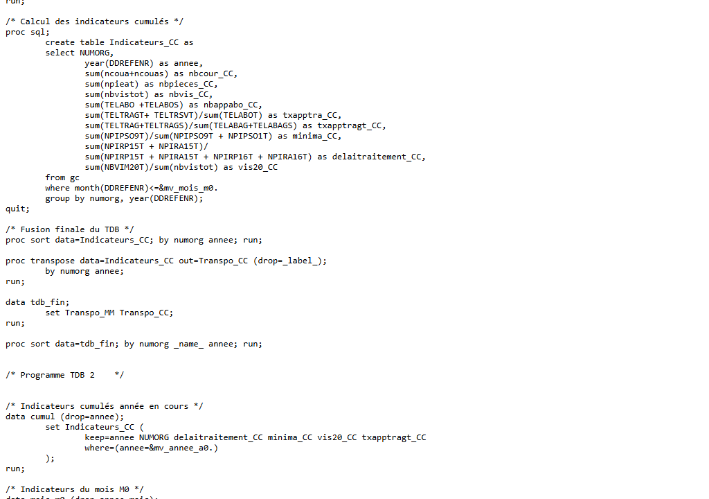

| Nom de la SAE | Reporting statistique avec SAS | |||
| Sujet spécifique | Production d'un rapport automatisé d'indicateurs de performance à partir de données de gestion, en langage SAS (PROC SQL, DATA steps, macro-variables). |
| Objectifs |
Maîtriser la syntaxe SAS (étapes DATA, PROC SQL, macro-variables). Filtrer, agréger et transformer des données de gestion (CAF, organismes). Automatiser la gestion des paramètres de dates avec des macro-variables. Produire des tableaux d'indicateurs de performance propres et exploitables. |
| Livrables | Programme SAS, rapport d'indicateurs |
| Compétence | Traiter |
| Apprentissages critiques sollicités | AC21.01 : Comprendre l'organisation des données de l'entreprise |
| AC21.02 : Réaliser le rôle central et spécifique de l'entrepôt de données dans la chaîne décisionnelle | |
| AC21.03 : Identifier et résoudre les problèmes d'intégration de sources complémentaires et hétérogènes | |
| AC21.04 : Comprendre la nécessité de tester, corriger et documenter un programme | |
| AC21.05 : Apprécier l'intérêt de briques logicielles existantes et savoir les utiliser | |
| Composantes essentielles à respecter | Comprendre la structure des tables SAS (GCACCPMM, GCSDPMM) et leur rôle dans la chaîne de reporting. |
| Identifier et résoudre les problèmes d'intégration de données multi-sources (formats, jointures SAS). | |
| Tester et documenter les programmes SAS ; exploiter les macros existantes et PROC SQL. |
| Compétence | Valoriser |
| Apprentissages critiques sollicités | AC23.03 : Choisir des indicateurs pertinents pour communiquer sur les résultats |
| AC23.04 : Prendre conscience de la rigueur requise dans ses productions | |
| Composantes essentielles à respecter | Sélectionner les indicateurs utiles (seuils d'alerte, évolutions mensuelles). |
| Automatiser la production du rapport (macro-variables pour les dates, %let). |
| Savoirs / connaissances | Savoir-faire | Savoir-être |
|---|---|---|
|
Syntaxe SAS : étapes DATA, PROC SQL, PROC FREQ. Macro-variables SAS (%let, call symput). Gestion des dates SAS (format ddmmyy, fonctions year/month). Logique de filtrage et d'agrégation de données de gestion. |
Écrire des requêtes PROC SQL pour extraire et agréger des données. Créer des macro-variables dynamiques pour les paramètres temporels. Filtrer les données sur plusieurs années et types d'organismes. Paramétrer des seuils d'alerte (%let mv_del15 = 0.85…). |
Rigueur dans la syntaxe (SAS ne pardonne pas les erreurs). Méthode et organisation du programme (commentaires, sections). Autonomie face aux messages d'erreur du log SAS. Précision dans la définition des indicateurs. |
Ce que je trouve bien réalisé, pourquoi ?
L'utilisation des macro-variables pour automatiser la gestion des dates (mois courant, mois précédent, années) est un vrai point fort : le programme s'adapte automatiquement à la date de référence la plus récente, sans avoir à modifier le code manuellement. Cela rend le rapport reproductible et maintenable.
Ce que je n'ai pas bien compris ; ce qui serait à améliorer pour une prochaine fois : pourquoi ? comment ?
La lecture des logs SAS et l'identification des erreurs (WARNING vs ERROR) n'est pas toujours évidente en début d'apprentissage. Pour une prochaine fois : lire systématiquement le log après chaque étape ; structurer le programme en sections claires avec des commentaires.

